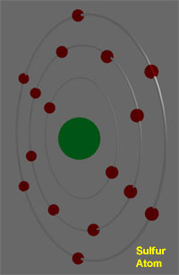
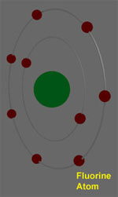
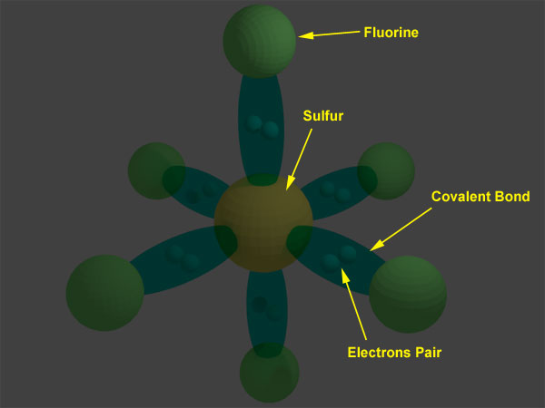

Manufacturing of Sulfur Hexafluoride Gas
Chemical Properties of Sulphur Hexafluoride Gas
Electrical Properties of SF6 Gas
List of Sulphur Hexafluoride Gas Properties
History of SF6
SF6 or sulfur hexafluoride gas molecules are combined by one sulfur and six fluorine atoms. This gas was first realized in the year of 1900 in the laboratories of the Faculte de Pharmacie de,Paris.
In the year of 1937, General Electrical Company first realized that SF6 gas i.e. sulfur hexafluoride gas can be used as insulating material.
After second world war, i.e. in the middle of 20th century, popularity of using sulphur hexafluoride gas as insulating material in electrical system was rising very rapidly.
Allied Chemical Corporation and Pennsalt were the first American industries, who began to produce this gas commercially in 1948. During 1960, using of sulfur hexafluoride gas in high voltage switchgear became popular. As the demand of this gas was increasing many manufacturers in Europe and America started producing SF6 gas in large scale, during that time.
At the beginning sulphur hexafluoride gas only used for insulating purpose in the electrical system. But soon it was realized that this gas has tremendous arc quenching property. Hence, this gas also began to be used in circuit breaker as arc quenching medium. World’s first SF6 gas insulated sub-station was established in Paris in the year of 1966. Sulphur hexafluoride medium voltage circuit breakers launched into market from 1971.
Manufacturing of Sulfur Hexafluoride Gas
SF6 or sulfur hexafluoride gas commercially is manufactured by reaction of fluorine (obtained by electrolysis) with sulfur.
During process of producing of this gas, other by products like SF4, SF2, S2F2, S2F10 are also produced in small percentages. Not only these byproducts, impurities like air, moisture, CO2 are also present in the gas, during production. All these byproducts and impurities are filtered at different stages of purification to get pure and refine final product.
Chemical Properties of Sulphur Hexafluoride Gas
For examine chemical properties of sulphur hexafluoride gas, we first introduce structure of this molecule. In this gas, molecule, one sulphur atom is surrounded by six fluorine atoms.
Structure of SF6 Molecule

The sulfur has atomic number of 16. That means, it has 2 electrons in first energy level, 8 electrons in second energy level and rest 6 electron in third energy level.Electronic configuration of sulphur atom is 2, 8, 6 i.e. 1S2 2S2 2P6 3S2 3P4.
The fluorine atom has atomic number 9. The electronic configuration of fluorine is 1S2 2S2 2P5.
Each sulphur atom in SF6 molecule creates covalent bond with 6 fluorine atoms. In this way sulfur atom gets total 6 covalent bond, i.e. 6 pair of electrons at its outer shell, and each flourine atom gets 8 electrons in its outer most shell.
N. B. : Here we can observe that, in sulfur hexafluoride external shell of sulphur atom has 12 electrons instead of 8 electrons. That means here sulfur does not obey general octal rule of atomic structure which states that, an stable atom requires 8 electrons at its outermost shell. This is not an exceptional case. Some elements in 3rd period and below can form compound that exceed 8 electrons in its outer most shell.
The molecular structure of this gas is shown below,

In this way sulfur hexafluoride fully satisfy stable structural condition. The effective radius of an sulphur hexafluoride molecule is 2.385 A. This exceptional electronic configuration and structure of this gas make SF6 extremely stable. The gas can be stable without any decomposition in its molecular structure up to 500°C. It is highly non flammable. H2O and Cl can not react with this gas. It also does not react with acid.
The SF6 gas is one of the heaviest gases. Density of this gas at 20°C an one atmospheric pressure, is about 6.139 kg/m3 which is about 5 times higher than air at same conditions. Molecular weight of this gas is 146.06.
The variation of pressure with temperature is linear for sulfur hexafluoride and it is small within the service temperature, i.e. from -25 to +50°C.
The volumetric specific heat of this gas is also high. It is around 3.7 times more than that of air and that is why this gas has also tremendous cooling effect in electrical equipment. The thermal conductivity of this gas is not very high it is even lower than air. Still it is quite suitable for cooling effect in circuit breaker. It is because, during dissociation of sulphur hexafluoride molecules around the electric arc, this molecules absorb high amount of heat. This heat is then released when the molecules reform at the periphery of the arc. This process helps to transfer heat from hot season to cool season very rapidly.
That is why, this gas has excellent cooling effect at high temperature although the thermal conductivity of SF6 is not very high.
Electrical Properties of SF6 Gas
SF6 gas is highly electronegative. Due to high electronegativity, it absorbs free electrons which produced due to arcing between contacts of circuit breaker. Combination of free electrons with molecules produces heavy and big ions, which have very low mobility. Because of absorption of free electrons and low mobility of ions. Sulphur hexafluoride has very excellent dielectric property. Dielectric strength of sulfur hexafluoride gas is about 2.5 times more than that of air.
List of Sulphur Hexafluoride Gas Properties
| Density at 20°C | 6.14 kg/m3 |
| Color of Gas | colourless |
| Molecular Weight | 146.06 |
| Thermal Conductivity | 0.0136 w/mK |
| Critical Temperature | 45.55°C |
| Critical Density | 730 Kg/m3 |
| Critical Pressure | 3.78 MPa |
| Sound Velocity in SF6 | 136 m/s.It is 3 times less than that in air |
| Refractive Index | 1.000783 |
| Formation Heat | -1221.66 Kg/mol |
| Specific Heat | 96.6 j/mole K |
| Breakdown Field Relative to Pressure | 89 V/m Pa |
| Relative Dielectric Constant at 25°C and 1 bar absolute | 1.00204 |
| Dissipation Factor or tanδ at 25°C and 1 bar absolute | <2 × 10-7 |
 by
by